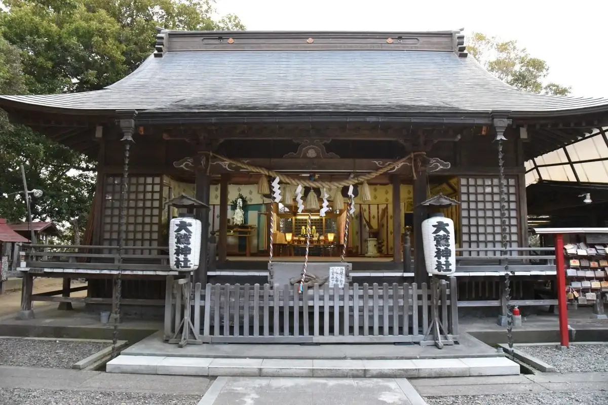
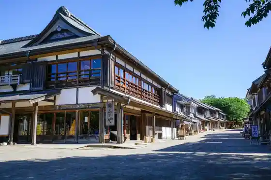
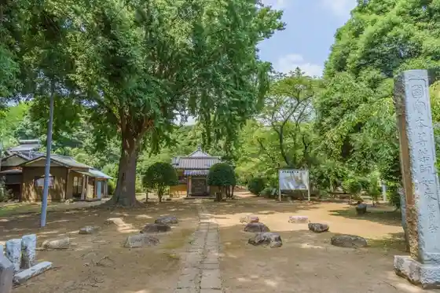
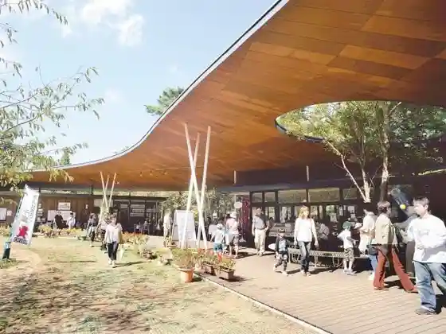
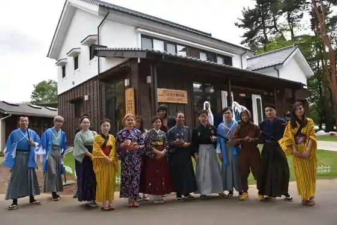

Japan / Chiba / Sakaecho
Sakaecho · Chiba
Sakaecho
Highlighted on the Chiba map.

Sakaecho Town Hall
Chiba Prefectural Boso no Mura
Sakaecho, Chiba · 0476-95-3333 · Official / source link

Ryukaku Tera
Sakaecho, Chiba · 0476-95-1112 · Official / source link

Owashi Shrine
Sakaecho, Chiba · 0476-95-1760 · Official / source link
Doramu Village
Sakaecho, Chiba · 0476-85-8155 · Official / source link

Kosupure no Kan

Ryukaku Tera Kofun Gun Iwaya Burial Mound
Sakaecho, Chiba · 043-223-4082 · Official / source link
Nuno Kama Soja Mizu Shrine
Sakaecho, Chiba · 0476-33-7713 · Official / source link
Nearby in Chiba: ← Otaki · Sakura →
Other towns: Abiko · Asahi · Chiba · Chonan · Choseimura · Choshi · Funabashi · Futtsu · Ichihara · Ichikawa · Ichinomiyamachi · Inzai · Isumi · Kamagaya · Kamogawa · Kashiwa · Katori · Katsuura · Kimitsu · Kisarazu · Kozaki · Kujukuri · Kyonan · Matsudo · Minamiboso · Mobara · Mutsuzawa · Nagara · Nagareyama · Narashino · Narita · Noda · Oamishirasato · Onjuku · Otaki · Sakura · Sanmu · Shibayama · Shirako · Shiroi · Shisui · Sodegaura · Sosa · Tako · Tateyama · Togane · Tomisato · Tonosho · Urayasu · Yachimata · Yachiyo · Yokoshibahikari · Yotsukaido
All towns in Chiba · Back to all prefectures